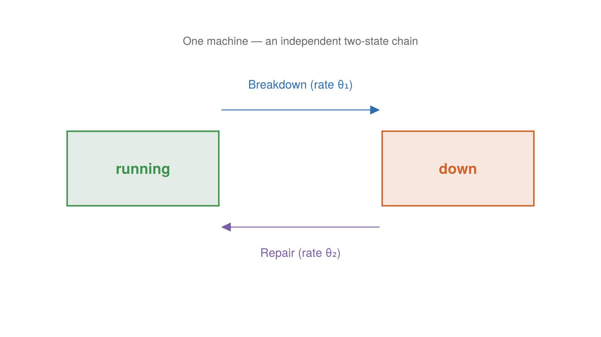

The Repair Shop Model
The repair shop is a deliberately tiny model — a handful of machines that break down and get repaired — whose purpose is not the dynamics but the machinery around the dynamics. It is the repository's demonstration of ChronoSim's record-and-replay workflow and of differentiating a trajectory's likelihood with respect to its parameters.
Where it comes from
There is no external citation; it is a purpose-built demonstration vehicle. The header states the intent plainly:
The model:
machine_cntmachines run until they break down and are repaired. Both clocks are exponential; θ = [breakdown rate, repair rate]. Exponential clocks keep the analytic score simple enough to verify by hand in the test suite, which is what makes this example an oracle-checked demonstration rather than a demo that merely runs.
Structurally it is the classic queueing-theory "machine repair problem," though the code never uses that name — and, importantly, there is no limited repairman resource. Every down machine is repaired concurrently, so the model is really machine_cnt independent two-state Markov chains: each machine goes up →(λ) down →(μ) up. That independence is exactly what makes a closed-form answer available to check the estimators against.
What it models
A shop of machine_cnt machines (default 3). Each machine is either running or down. A running machine breaks down after an Exponential(θ[1]) delay; a down machine is repaired after an Exponential(θ[2]) delay and returns to running. The parameter vector is θ = [breakdown rate, repair rate].
State
The state is minimal — one condition field per machine:
@enum MachineCondition running down
@keyedby Machine Int64 begin
condition::MachineCondition
end
@observedphysical Shop begin
machines::ObservedVector{Machine,Member}
endShop(machine_cnt) allocates the machines and starts each one running.
Events
Two events, each keyed by a machine index. Both take the four-argument θ-seam form of enable, building their exponential clock from the caller-supplied θ:

Each machine is an independent two-state chain: running breaks down at rate θ₁ and down is repaired at rate θ₂.
Breakdown(machine) — enabled while the machine is running:
enable(evt::Breakdown, shop, θ, when) = (Exponential(inv(θ[1])), when)
function fire!(evt::Breakdown, shop, when, rng)
shop.machines[evt.machine].condition = down
endRepair(machine) — enabled while the machine is down:
enable(evt::Repair, shop, θ, when) = (Exponential(inv(θ[2])), when)
function fire!(evt::Repair, shop, when, rng)
shop.machines[evt.machine].condition = running
endNeither fire! draws any randomness — the events only flip a condition. That matters for the record-and-replay workflow: because nothing in a firing consumes the random stream, a recorded trajectory replays deterministically. The initializer writes every machine's condition to running, and those writes propose the first Breakdown events.
Why θ is read from a parameter vector
The load-bearing design point is that each event builds its distribution from the θ passed in, not from a constant baked into the code. When θ is an ordinary vector of floats you get an ordinary simulation. When θ is a vector of ForwardDiff.Dual numbers, inv(θ[1]) promotes and the dual flows into the Exponential — so evaluating the trajectory's likelihood at a dual-valued θ yields not just the log-likelihood but its gradient in the parameters, with no global state changing between evaluations. That is the foundation of the two pages that follow:
- The likelihood workflow — record a run, check the replay against the forward log-likelihood exactly, then differentiate the trace log-likelihood with ForwardDiff and compare to a hand-derived analytic score.
- Gradient estimators — the companion
repairshop_gradients.jlruns ClockGradients' whole estimator family against one closed-form oracle.